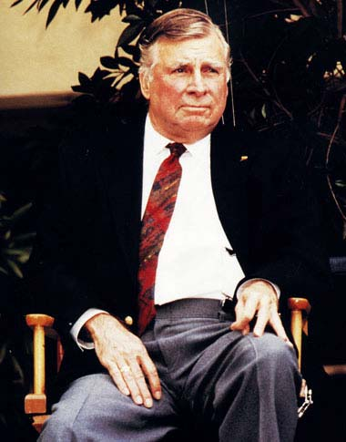
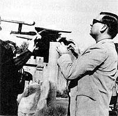
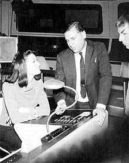
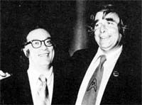
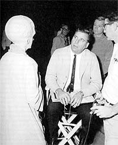
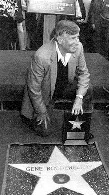

|

Publicado originalmente
em 2002

Depenando o grande pássaro
da galáxia
DS9
foi a série que mais subverteu a famosa "visão" de Gene
Roddenberry --saiba agora por que isso pode ter sido bom
|

|
Na recente entrevista concedida pelos colunistas deste site, uma questão me chamou um bocado a atenção: "Qual foi o melhor profissional da história de Jornada?". Ao contrário do que alguns pudessem imaginar a princípio, o nome de Gene Roddenberry, o criador da série e o nome mais visível de sua história atrás das câmeras, praticamente não foi lembrado nas respostas. Nesta coluna aproveito para expressar minha opinião pessoal sobre a qualidade profissional de Roddenberry, sua real importância na história de Jornada e a sua visão sobre o que Jornada é --a famosa "visão Roddenberriana".  De fato, meu interesse aqui é construir uma base para tornar mais claras (e contextualizadas) as opiniões sobre Deep Space Nine que serão veiculadas mais a frente em minha coluna. A explicação é simples: DS9, dentre todas as séries de Jornada, parece ser a que tem maior "talento" para provocar discussões e polarizar opiniões. Ela é considerada por muitos como a visão "diferente" e "dark" do universo de Jornada. Em especial, muitos críticos condenam a série por "destruir" o universo idealizado por Roddenberry. Quando rascunhando o que seria o artigo desta semana (que agora se tornou o próximo artigo) eu constatei que estava "falando grego" em certos pontos. Um artigo de preparação se fazia necessário. O título é uma brincadeira e vou utilizá-lo para agrupar e indicar questões polêmicas no futuro desta coluna (daí esta ser a "primeira parte"). Mas vamos ao que interessa, serei bastante
breve...  De qualquer forma, considero a tecnologia em Jornada, seja ela tendo origem em referências especulativas literárias ou em limitações logísticas, bastante consistente, no sentido de que ela pode ser utilizada sem enfraquecer o drama subjacente nem causar gargalhadas involuntárias na audiência. Entretanto, devo admitir que o crescente uso da famosa "treknobaboseira" (que tem suas origens na quarta temporada da Nova Geração --e eu vou deixar para vocês julgar se a entrada do Brannon Braga nos quadros de Jornada nesta época tem algo a ver com isto), como um "método eficiente" de tirar e colocar os nossos em heróis em confusão, corrompeu um bocado as noções originais de Roddenberry sobre como deveria ser a tecnologia de Jornada, que de fato era (e é) excelente.  O episódio duplo "The Menagerie" foi construído como um "envelope" para aproveitar o material do "The Cage", para cortar custos. Este episódio ganhou o prêmio Hugo (o Oscar da ficção científica) sendo creditado como sendo escrito integralmente por Roddenberry, quando na realidade o construtor de tal "envelope" foi John D. F. Black, um outro produtor da série na época. Um outro assunto correlato é o de que a série original foi a única série de Jornada a contar com episódios escritos por grandes nomes da literatura de ficção científica. Isto é verdadeiro no máximo até o primeiro rascunho e às vezes se resumia, no "frigir dos ovos", a um "Pitch". O distanciamento da maioria destes autores com a produção de uma série de TV era tanto que eram necessárias maciças reformulações no material original (ainda que todo o esforço fosse feito para manter o nome do autor original com crédito de "written by", por motivos de prestígio para a série e para fazer média com a comunidade literária). Os maiores problemas com estes autores eram os elementos que levavam a orçamentos ridiculamente acima da realidade de produção da série e problemas na caracterização dos personagens (problemas de "vozes", por exemplo). Quem rescrevia? Todo mundo com algum tipo de crédito de Produtor ou Editor de Roteiros/Histórias.
Gene escreveu e produziu o piloto original de Jornada, "The Cage", o exemplo mais puro de sua visão. Em relação à Série Clássica, criou e foi produtor responsável direto pelos roteiros (em ordem de produção) até o episódio "Dagger of the Mind". Daí em diante permaneceu creditado como produtor-executivo da série.  Uma coisa absolutamente misteriosa era como Roddenberry tirava inúmeras e longas férias da produção da série --quando já era somente produtor-executivo-- e nunca tinha o seu crédito revertido para consultor (o que é normal nestes casos).Com relação à Nova Geração, ele criou a série e tocou os roteiros na primeira temporada, mas permaneceu creditado como produtor-executivo até o final da quinta temporada (mesmo após a sua morte, que ocorreu durante esta temporada). Na segunda temporada os aspectos executivos da série foram absorvidos em sua maioria por Berman e os criativos por Hurley e Snodgrass. Roddenberry continuava enfiando a mão aqui e ali, mas infinitamente menos do que na primeira. A partir da terceira temporada uma situação se estabeleceu, motivada por uma decisão pessoal ou pela sua doença, de ser de fato consultor. Seu crédito só não foi modificado, acredito eu, por carinho e respeito. Quanto aos filmes, após a lambança de bastidores do primeiro filme, Roddenberry foi colocado como consultor nos filmes seguintes, para benefício de todos. Cinema não era a praia dele, ele mesmo reconheceu isso antes de morrer. Ele não tem nada a ver diretamente com DS9
ou Voyager. - Uma visão otimista do futuro. Nos anos 60
o medo de um holocausto nuclear era extremamente concreto (o próprio
Roddenberry fez tal holocausto parte da história de Jornada),
as pessoas temiam REALMENTE pelo futuro da humanidade, mostrar
semanalmente um futuro utópico de paz e exploração, com ausência
de preconceitos, era um convite ao mesmo tempo ousado e irresistível.
Talvez a real grande contribuição de - O ser humano é uma entidade ao mesmo tempo insignificante perante o universo e ao mesmo tempo única e especial em si mesma. Falha, mas com a capacidade de evoluir (para uma forma de vida não-corpórea? --Talvez). Porém o início, meio e fim de tal evolução não estão DE FORMA ALGUMA relacionados com as noções de Deus, religião ou fé.  - A suprema glória da criação reside na infinita diversidade e em suas infinitas combinações. Sem dúvida o mais significativo truque publicitário da indústria do entretenimento.  Encerrando: vou ficando por aqui, deixando
alguns ganchos para pendurar coisas no futuro e a certeza de não
ter nem arranhado a superfície das inconsistências deste confuso
E MARAVILHOSO universo de Jornada e da posição nele
ocupada por seu criador, Gene Roddenberry. Com certeza voltarei
outras vezes "depenando o grande pássaro". |